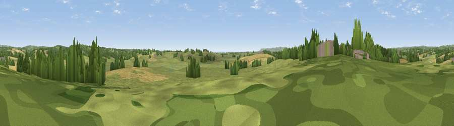

Viewpoint near Wartling
#27608 in England · top 33% of its area beats it · near WartlingWhere it is
The exact computed spot (TQ 67075 11375). Click the marker for map links.
The view, rendered

A 360° render of this exact spot computed from the terrain model, tree cover and land cover — summer colours, afternoon light, calibrated against photographs of famous viewpoints. Real trees, hedges and buildings will differ in detail.
The panorama
Grey silhouette: terrain skyline in each direction (720 bearings, Earth curvature and refraction included). Dashed green: skyline with trees (+15 m) and buildings (+8 m) as obstacles. Blue strip: how far the ground is visible on each bearing.
Where the view opens
Wedge length = distance to the farthest visible ground on that bearing (vegetation-aware). Rings at 10, 25 and 50 km.
What fills the view
61% grassland · 21% cropland · 14% woodland · 2% wetland · 1% built-up ·
Angular shares of the visible panorama (visual magnitude), not map area. Landscape diversity 0.47 (0–1 Shannon).
Key numbers
More beautiful places nearby
The staircase of upgrades: each row has a higher view potential than everything closer. Driving times are estimates from straight-line distance, calibrated against real road routing — check an actual route before setting out.
| Place | Direction | Drive | Score |
|---|---|---|---|
| Viewpoint near Ashburnham | NNE · 3 km | ~8 min | 47.1 |
| Viewpoint near Ninfield | NE · 5 km | ~10 min | 51.9 |
| Viewpoint near Catsfield | NE · 5 km | ~11 min | 56.8 |
| Viewpoint near Dallington | N · 6 km | ~13 min | 58.4 |
| Viewpoint near Dallington | N · 8 km | ~16 min | 67.2 |
| Viewpoint near Brightling | N · 9 km | ~18 min | 68.0 |
| Brightling Obelisk [Brightling Down] | N · 10 km | ~19 min | 69.1 |
| Viewpoint near Willingdon | SW · 13 km | ~24 min | 83.4 |
50.87772, 0.37348 · source: screening · position refined by local search. Computed location — check access rights before visiting.